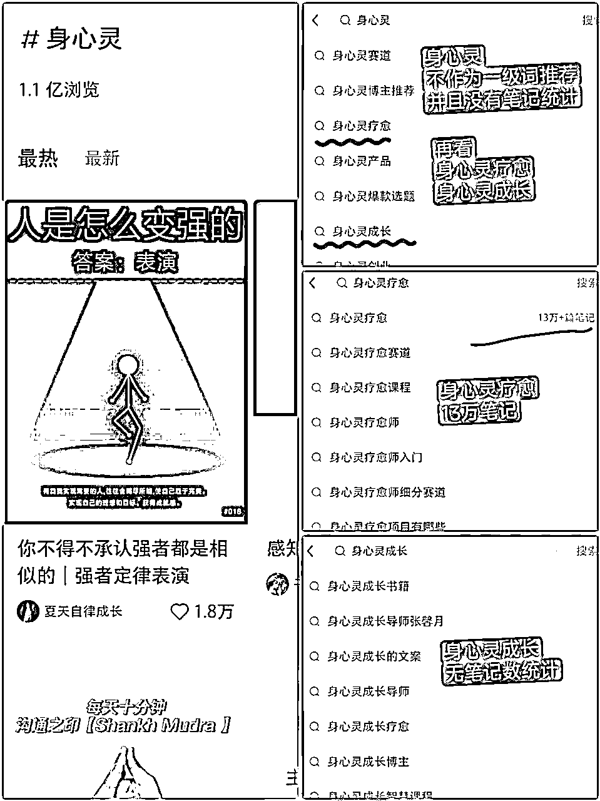

来源：https://vy7zcdp134.feishu.cn/docx/B4nydku24oiPXWxrhrJcce0tnwe
1、身心灵项目还处于红利期，有能力的尽早下场。
2、身心灵客户具有持续的终身价值，持续在场，做好精细服务和运营，可以持续吃到复利。
3、身心灵项目有广泛的需求，不是心理咨询师、疗愈师的专属，对于一些其他行业，比如消费品牌，茶室/民宿等实体门店，又或者插画设计等，用身心灵+的概念，也能获得很好的流量与变现。
4、文末有3份列表，收集了小红书#身心灵、#疗愈、#治愈 几个标签的爆款笔记、账号、标题、高频词，可自行领取
另外，本文所有案例账号，都没有利益相关，不作任何推荐和背书。
近年来，身心灵、治愈系等概念比较广泛，主要是指通过某种活动，获得解压放松，以及自我认知、接纳、启发等等。出圈的有颂钵、文玩盘串、佛祖咖啡、电子木鱼、α脑波、断舍离疗愈营、正念冥想等等。
小红书上的身心灵项目，主要是交付一种产品，
这种产品是某个心理工具，以服务、虚拟物品或实物的形式【*注1】，去帮助客户洞察内心、接纳自我、缓解压力、调整情绪，提供成长、认知、心理、情绪和陪伴等价值，以此获得收益。
【*注1】服务（课程、咨询、疗愈、冥想等）、虚拟物品（白噪音、解压音频视频等）或实物（心理卡牌、解压物品等）
大多数灵修方式起源于东方古老的宗教信仰，修行者在持续稳定的练习中达到一种极度专注、平静、祥和的身心合一状态。
如今中国市场上正火热的“身心灵”课程，抽取一些核心方法运营成商品课程，引导人们在最短的时间里尝试着走近“灵性”。
这些课程成为某种工具，帮助抚平人的内在焦虑。
——三联生活周刊 https://www.lifeweek.com.cn/h5/article/detail.do?artId=217039
我们在2021年开始做小红书的时候，接触过身心灵项目。
就我在小红书观察到的身心灵项目而言，发生了一系列的变化：


以小红书为阵地的博主，主要是通过内容输出进行引流，输出身心灵知识，帮助粉丝觉知和成长；或者通过输出一些正面肯定语句、治愈系的插画漫画，提供情绪价值，获得流量。
有的大机构，或者大IP，主要是做全域推广，小红书只是作为他们引流的一个组成部分，因为身心灵包含了疗愈修行体验、知识内容学习，小红书不方便输出大段的文字或者视频。
比如主打心理和情感的KnowYourself，在小红书只作一些日常更新，相比其在微信公众号动辄上万的阅读量，小红书笔记的数据显得相对冷清。
KnowYourself 小红书账号
KnowYoursel 公众号
而一些注重实地体验的泛疗愈机构，比如小红书上很火的抄经小院——成都文殊院香园，更注重其他渠道的推广和运营，在小红书上的账号，基本就把小红书当成一个展示的功能，有点“保持在场，别人来小红书搜索的时候，能搜到我”这种意思。
小红书搜索抄经小院，很多博主介绍

其中一个博主介绍，过万赞，9千多收藏，评论都在问：在哪里？
抄经小院——成都文殊院香园自己的账号，小红书上运营，相对佛系
身心灵项目变现方式，和知识付费相近，大家可以好好看一下生财的疗愈赛道合集，点击下方跳转
生财疗愈赛道合集：心灵疗愈需求旺盛，如何抓住风口？
小红书上身心灵变现方式，主要有这几种
3.1咨询、心理治疗
咨询和心理治疗是一体的，
3.2课程、训练营、冥想、疗愈
3.3社群、知识星球
3.4卖货
生财：日赚过万，喜马拉雅“声谷”40万粉是怎么打造的？
3.5泛身心灵产业
身心灵疗愈馆、身心灵民宿、禅茶馆、香道馆、抄经小院等
3.6接广告
3.7引流至APP变现
例子，FLOW冥想APP
好的案例账号挺多的，不一一列举了，有些更好的可能我也没看到，主要是介绍一个思路，以便学习借鉴。
心理学方向，主要以公众号、APP为主，结合私域运营
KnowYourself小红书账号

公众号，多篇10W+
公众号有赞上的聊愈服务，240元/次

训练营和课程


月食APP内项目
冥想方向，以APP为主，线下门店、私域相结合，小红书店铺也开始尝试

FLOW冥想小红书账号
单品笔记有14万赞藏

FLOW冥想APP内页
FLOW冥想APP的课程
心理学方向，以线下门店为主，结合私域运营
小红书账号主页，有线下门店入口

账号笔记中，有线下活动招募海报
私域微信群活动
冥想猫是主打线下实体的一个账号，主要经营冥想课程、线下冥想活动、疗愈师培训、团建等活动承接、冥想音频授权等，小红书还用了小号来承接私信，引流到私域。
主号 【冥想猫Musecat】笔记内容主要是带领冥想的视音频；
小号 【冥想猫|线下活动】 笔记主要展示线下活动。
做线下实体的老板，可以考虑这样的方式。
主号 【冥想猫Musecat】笔记内容，笔记首图是风景照+白色文字，比较统一
小号 【冥想猫|线下活动】 笔记主要展示线下活动，照片精美
主要引流到私域变现，也有在小红书卖商品、卖课、接广告变现
介绍2个例子，其实很多，大家随便搜都能找到
大小号搭配，大号是真人出镜的视频笔记，主要讲一些职场、家庭心理学内容；小号是直播号，主页笔记内容有高纬传讯、负能量等特色理论的身心灵内容。
大号主页简介处@ 了小号，主页笔记是以心理学内容为主，真人出镜视频
小号有高纬传讯、负能量、换yun消业等词汇，赞藏数据现实有一定的受众群体
小红书群聊比较活跃
这个账号属于特色理论体系，介绍希塔疗愈，水晶疗愈，笔记真人出镜为主，开有小红书店铺卖水晶，也有收费的课程专栏，小红书群聊每天更新，有私域运营。

小红书主页

小红书笔记
小红书店铺
小红书课程

小红书群聊活跃
这类账号变现，主要是接广告、售卖周边等，结合AI出图、出文案，加上自己有一些设计能力，流量和收益也很不错。到了后期，如果IP火了，就有更多的可能性。
粉啵啵是一个插画账号，笔记内容偏向身心灵的治愈系，可爱的画面配上正面文字，有很多人喜欢，开通了小红书店铺，产品比较丰富，有日历、冰箱贴、手机壳、手机支架、喷画等。

账号主页风格
可爱的插画，配正面文字，小红书粉丝很吃这一套，单篇迎新年笔记就2.6万赞

小红书店铺周边产品
这个账号23年11月底刚起号，起号速度很快，画面风格很多人喜欢，我也是主页推荐刷到的，小红书店铺目前是卖壁纸，大家可以留心观察。所以插画师选身心灵方向，是一个好选择，美学治愈。


这里不赘述了，上面也放过，这样的账号挺多的，笔记非常容易做，流量也不错，主要就是做好流量承接、变现。
2个tips：
可以用【打卡】这样的形式，增加粉丝粘性；
笔记可以批量制作，生财里有不少帖子，文案可以找文案库解决。


据我了解，目前国内对身心灵、疗愈师行业还没有规范化管理，除了心理咨询师证，其他都没有国家级颁发的证书。市场上的证书，多是一些二级机构或者协会颁发的。所以证书并不重要，证书不重要，证书不重要！不要让证书成为门槛！
1)个体心理活动是独特的、复杂的，同样一个问题，每个人的思维理念、感知程度、环境影响因素不同，疗愈治愈效果就不同。
所以不要用最好的案例效果，作为服务底线去承诺，我们的做法是，让对方明确学习也好，身心灵疗愈治愈也好，这是一个双方都要努力的过程，更主要是客户自己的获得感。
2)心理学工具是有限的，不可能解决所有的身心灵问题，所以，不能“包治百病”，每一个疗愈师都应该针对自己擅长的领域，去解决一类问题，而不是所有问题。最开始客户来咨询的时候，筛选客户，也很重要。
正因为目前市场没有规范化的管理，没有行业规范和标准依据，所以对从业者来说，也缺少一定的保护。服务的人多了，很可能会遇到不理解的，甚至无理取闹的，投诉你诈骗的，这时候直接退款。
过多的解释和拉扯，都是一件非常耗能的事，并且容易对IP造成伤害，看看小红书上那些吐槽就知道了（爱之深，恨之切）。
身心灵作为心灵的美业，就和做美容一样，是一个可以吃客户终身价值的行业。持着割韭菜砍一刀就跑来做身心灵项目，真是因小失大。
让客户信任你，长期持续复购，不香么？
国学、脉轮等特色理论体系的身心灵内容，有时候到句易网上检测没有违规字词，但是发到小红书上，有时候被同行投诉会被判断为无科学依据、封建迷信等，轻则影响账号权重，重则封号。
我看到比较多的做法，是小红书只发布一些偏心理学，或者不讲敏感字词的笔记，通过把粉丝引流到私域后，再分享自己的特色理论内容。
所以这方面是和平台动态博弈的过程，多看对标账号怎么规避，和你项目相近的同行，是最好的老师。
小红书是偏向娱乐社交的平台，粉丝喜欢简单易懂，画面精致，有美学感的内容，有些账号在别的平台很吃香，但在小红书就没那么火。
比如knowyourself，主要是在公众号以长文引流；
又比如一个叫欢喜happy的身心灵博主，私域很多高客单，抖音上比较火，小红书相对平淡（见下图）。
所以大家前期做账号时候，可以多放几个平台测试，看看自己更适合哪个平台，当然，能一鱼多吃，更好。

欢喜happy的小红书账号数据
欢喜happy的抖音账号数据
身心灵项目整体发展，还处在初级阶段，表现在：
1）在行政管理方面，尚未有明确的规范和监管
2）市场集中度不高，还没出现全国范围的头部品牌
3）小红书上需求强（浏览多)，但相对来说竞争不强（笔记不多)，见下图


这3张图，标注了#心理学#心理#疗愈#治愈#身心灵 等关键词标签 的浏览量和笔记数。
数亿量级的浏览（需求），只有区区数万量级的笔记、商品（竞争），身心灵赛道，依然大有可为。
也就是说，抓住红利期尽早布局下场，除了可以吃到红利外，还可以抢占市场和客户心智，建立优势。
另外，在这可以再次看到1.3.1说到的，小红书官方正在把身心灵内容，引导到心理学方向，#心理学、#治愈 的浏览量，相对高于#身心灵、#疗愈；
#身心灵 在搜索栏下拉列表甚至不作为一级词推荐，也没有笔记数统计标注
每一个个体都是独特的，然而社会的运行需要遵从统一的范式，所以我们每个人都会受到外界影响，当内在和外在有冲突的时候，我们就会有困惑，有烦恼，需要被治愈。
所以，身心灵项目可以说是心灵的美业，是一个持续高复购的项目。保持持续在场，做好服务和运营，就可以获得客户有终身价值，持续的吃到复利。
而且，身心灵IP，越老越香，会有越来越多客户来找你。
身心灵项目有广泛的需求，不是心理咨询师、疗愈师的专属，对于一些其他行业，比如消费品牌，茶室/民宿等实体门店，又或者插画设计等等，用身心灵+的概念，也能获得很好的流量与变现，上文已经介绍过，不再赘述。
场地可容纳人数，是否方便到达，是否可以停车等；
环境是否安静、照明是否合理（比如冥想要暗、抄经要亮，大不一样）、疗愈设备/装置是否舒适、通风是否良好、气味/温湿度控制等是否合理，都要考虑，这样客人才能放松。
集体活动需要服务的客户多，需要有服务团队，制订和执行活动流程，实时控场，实时响应客户需求。
场地、人工等前期投入成本，需要资金启动；
运营过程中，因为有场地、人工等固定支出，又需要源源不断的获得收益，同时有一定的资金储备。
课程、咨询、疗愈类项目，需要疗愈师、咨询师有一定的知识和经验积累，在面对不同的客户时候，才能做好身心灵的治愈、指引，获得客户的认可与信任，完成交付获得收益。
情绪和体验排首位，多注重身心放松、社交娱乐、美育欣赏等环节的体验营造。
这类项目有集体冥想、颂钵、念诵、抄经等。
知识和陪伴排首位，注重满足个体差异需求，个体心智的认知塑造等设计。
这类项目有1V1咨询 /疗愈；带领修行、觉知等
打造品牌，出标杆案例或活动事件（结合平台、品牌等)，占据消费者心智
例子 #knowyourself 占据情感心智，#FLOW冥想 在冥想这条赛道布局
如果想做大规模，一定要考虑符合监管，并且做对市场有益的事情，就我观察到的情况而言，机构做身心灵项目，选择现代心理学体系比较容易。
专注某个领域，深耕，聚焦某一类问题，比如情感、职场、成长、自信等
个人身心灵咨询师、疗愈师，应该往IP，以及人生教练的方向做。
泛身心灵实体门店，主要指冥想室、禅茶馆、水晶疗愈馆、芳香疗愈馆、抄经小院等等
建议注重同城流量，做好精细运营，提高体验感
身心灵治愈周边商品，相对宽泛，可以是香薰蜡烛、书籍画报卡牌等印刷品，也可以是有正念语句的手机壳，某个治愈卡通形象的解压毛绒玩具等
这些周边商品，想要获得变现收益，就要讲好身心灵故事，为客户提供情绪价值、社交货币。
认真做身心灵项目的从业者，多少是相信福报的，爱来爱返。
来咨询或者接受治愈疗愈的客户，往往都遇到比较大的心理困扰，焦虑、低迷、甚至有的处在崩溃边缘。
这个时候，从事身心灵项目的人，可能一句话，就能给对方很大鼓励和帮助，相反，如果骗对方，打击对方，会造成更大的伤害。
很多疗愈师的忠实客户，都是在客户最困难时的安慰和陪伴获得的，有什么比雪中送炭和一起成长，带来的关系更牢固呢？
情绪真的是一件非常微妙的事情，在做心理咨询、疗愈、陪伴的时候，有些客户负面情绪非常大。
合作的疗愈师经常和我说，不行了，这个客户太执着，负面情绪太强了，和ta接触非常难受。
所以，身心灵从业者，首先要做好自己身心健康，不被客户的负面情绪影响和裹挟，才能去治愈和指引别人。
AI在各行各业都有了应用案例，身心灵行业除了用AI生产内容，还有一些应用例子，相信后续会更多，保持关注。
ChatGPT应用有 hotoke.ai机械佛；微信上有小程序AI佛祖（后因涉及宗教事务监管被下架）。
在咨询领域应用AI，是非常好的方向，但要注意相关监管。
新浪报道
ChatGPT应用hotoke.ai
小程序AI佛祖，后因监管被下架
生财：AI 情感疗愈师利用AI换脸和换声技术满足空巢老人和留守儿童
我收集整理了#身心灵、#疗愈、#治愈 几个标签的爆款笔记，分别做了3份列表，包含爆款笔记标题、链接、账号、点赞数、高频次，有需要的朋友，可以点击下方链接跳转：
-#身心灵 爆款笔记、账号、高频词-
-#疗愈 爆款笔记、账号、高频词-
-#治愈 爆款笔记、账号、高频词-
——
感谢阅读，一起生财有术！